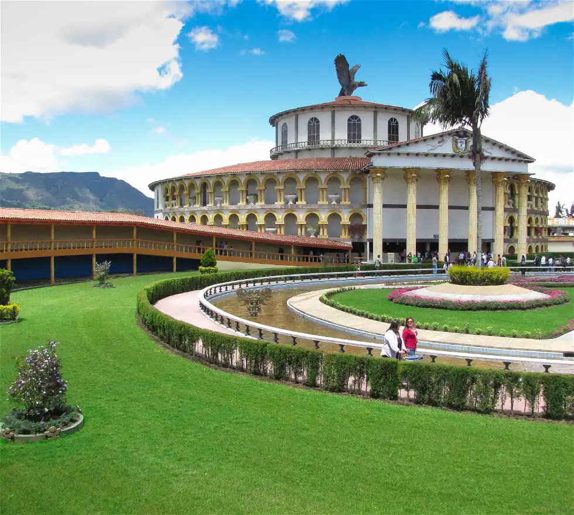

El Parque Jaime Duque es un parque tematico dedicado a la recreación familiar. Está ubicado en el municipio de Tocancipa, en el departamento de Cundinamarca.
El parque fue desarrollado e inaugurado el 27 de febrero de 1983 por Jaime Duque Grisales, una personalidad de la aviación civil colombiana y el primer jefe de pilotos nacional de la aerolínea Avianca.1